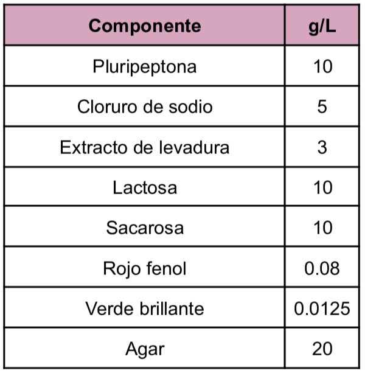
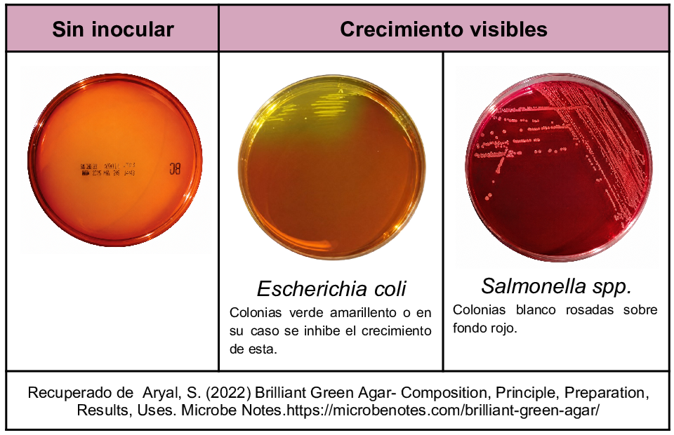

Medio de enriquecimiento de tipo selectivo utilizado en el aislamiento de
Salmonella spp.
excepto para las especies
S. typhi y S. paratyphi.
en muestras de alimentos y muestras clínicas.
Dentro de la composición del medio de cultivo se tienen a la lactosa y la sacarosa como carbohidratos fermentables, el rojo de fenol como el indicador pH el cual vira a amarillo derivado de la acidificación del medio y el verde brillante el cual es el agente selectivo que inhibe el desarrollo de flora Gram positiva y de algunos Gram negativos.
Composición

pH a 25°C 6.9±0.2
Resultados Posibles
Se pueden obtener dos posibles crecimientos con las siguientes características:
Bacterias fermentadoras de lactosa y/o sacarosa: colonias amarillo verdosas en un fondo amarillo.
Colonias no fermentadoras de lactosa y/o sacarosa: colonias blancas-rosadas o transparentes sobre un fondo rojizo.

Referencias
Aryal, S. (2022) Brilliant Green Agar- Composition, Principle, Preparation, Results, Uses. Microbe Notes.https://microbenotes.com/brilliant-green-agar
Britania (2021) Verde Brillante Agar. https://www.britanialab.com/storage/productos/ft-8fQ51.pdf